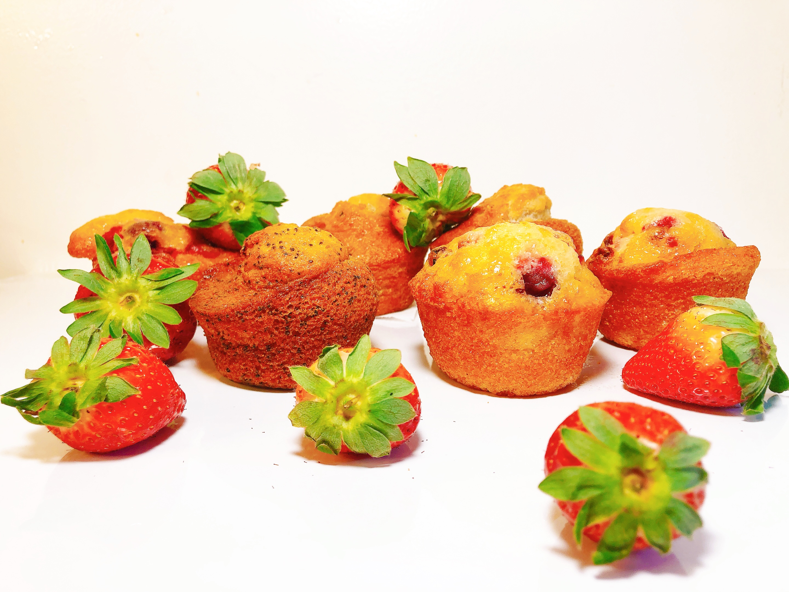

Muffin is my favorite and most proud cake because I succeeded right from the first try. Before starting to make a certain type of cake, I always try the original flavors of the origin of the cake and refer to the taste of the locals.
The reason for naming the cake is the American muffin so that I can clearly distinguish it from the English muffin.
With careful "research" and meticulous recipe recording, I came up with a very satisfying version of muffins after two tests. The cake is fragrant, moderately sweet, soft and spongy with a combination of fresh fruits such as strawberries, blueberries or cinnamon powder.
If you bake the cake yourself, you will see the happiness in watching the cake turns out in the oven and the moment take it out with its delicious aroma ^^.
Everyone should try it and give me suggestions on how to make it perfectly as well as creative versions of the recipe!
With this recipe, I made 12 muffins. Timing: 45 minutes
☀︎ INGREDIENTS:
• 250g all-purpose flour
• 1 tsp baking soda
• 1/2 tsp salt
• 1 tsp of baking powder
• 1/2 tsp cinnamon (if needed)
• 120g unsalted butter (keep butter at room temperature)
• 2 large eggs (keep eggs at room temperature)
• 150g white granulated sugar
• 1 tsp vanilla extract
• 120g sour cream (sour cream with 12-16% fat content)
• 5 strawberries
⭐︎ Muffins are rich in flavor and color. I have tried fresh fruits like strawberries, blueberries, bananas, raspberries or dried nuts like raisins, peanuts, cinnamon powder and other chocolate chips. I really like the taste of cinnamon, the cake has a super fragrant smell after baking.⭐︎ Muffins also have savory fillings such as bacon, cheddar cheese, etc. Everyone can choose their favorite ingredients without fear of losing the original flavor of the muffin. Cooking is also a creative art.
⭐︎ For the color, you can add food coloring to increase the attractiveness and highlight of the cake.
NOTE: Unsalted butter can be replaced with vegetable oil. Do not use olive oil because it has a quite special taste, so when it is finished baking, the olive flavor will be quite strong and lose the typical flavor of the muffin. ☀︎ PREPARE DRY INGREDIENTS: - Sift all-purpose flour, salt, cinnamon, baking soda, and baking powder into a bowl and use a spatula to mix well. ☀︎ PREPARE WET INGREDIENTS: - Using a spatula or mixer on low speed beat butter with sugar until mixture is smooth (about 1 minute). - Continue to add vanilla extract, sour cream and eggs, beat on medium speed until well combined (about 1-2 minutes). ☀︎ MIXING: - Strawberries are washed and diced. If using banana, use a fork to mash. - Add the strawberries to the dry flour mixture first and then use a spatula to mix well so the strawberries can be dispersed when mixed with the butter and egg mixture, and the finished cake will have strawberries spread all over the place. - Gradually add the dry and wet flour mixture above and mix well until combined. At this point, the mixture will be quite thick because the characteristic of muffins is spongy and dense (different from cupcakes) NOTE: Important step!! Do not mix too long or too thoroughly because it will make the cake out of the oven will not rise, hard and the cake will be empty. ☀︎ BAKING: - Preheat oven to 177°C. - Prepare baking pans (same type as cupcakes) and line each mold with parchment paper. - Use a spring spoon to scoop the ice cream (5cm in diameter) to make sure the cakes were of equal proportions NOTE: Pour the dough about 2/3 of the mold because muffin is still rising. Otherwise, it will overflow and not look very nice. NOTE: After the dough is mixed, bake it right away because if left for a long time, it will make the batch of cakes after baking will not bloom and no longer have porosity. - Bake at 177°C for 18-20 minutes until golden brown. - After baking for the specified amount of time, use a toothpick to lightly skewer the muffins, if you pull it out without seeing the dough, they are cooked evenly. - Remove them from the oven and place on a rack to cool. Freshly baked muffins will be very fragrant, crispy and spongy. Whether hot or cold, they retains its moisture and spongy. ★Keep the muffins in a cool and dry place. Using them within 3-5 days, leaving for a long time will reduce the quality.
★Keep the muffins in a cool and dry place. Using them within 3-5 days, leaving for a long time will reduce the quality.